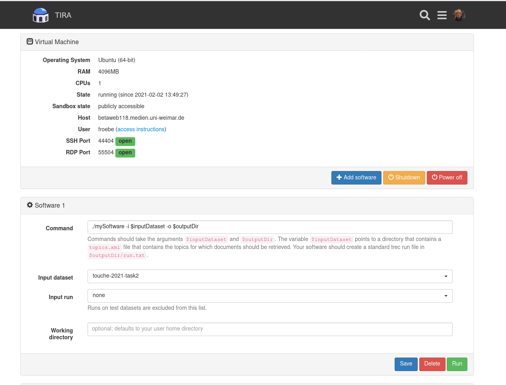

Touché Task 2: Argument Retrieval for Comparative Questions
Synopsis
- Task: Given a comparative question, retrieve and rank documents from the ClueWeb12 that help to answer the comparative question.
- Input: [data]
- Submission: [submit]
Task
The goal of Task 2 is to support users facing some choice problem from "everyday life". Given a comparative question, the task is to retrieve and rank documents from the ClueWeb12 that help to answer the comparative question.
To register for the shared task click on [registration].Data
Touché 2021 topics (only titles) for Task 2 can be downloaded from here. The topics are provided as an XML file.
Example topic for Task 2:
<topic>
<number>1</number>
<title>Which is better, a Mac or a PC?</title>
</topic>
[Download relevance judgments from Touché 2020]
[Download submitted ranked documents (runs) from Touché 2020]
The corpus for Task 2 is the ClueWeb12 corpus; you may index the ClueWeb12 with your favorite retrieval system. To ease participation, you may also directly use the ChatNoir search engine's API for a baseline retrieval. You will receive credentials to access the ChatNoir API upon a completed registration.
Evaluation
Be sure to retrieve documents that comprise convincing argumentation for or against one option or the other. Our human assessors will label the retrieved documents manually, both for their general topical relevance and for the rhetorical quality, i.e., "well-writtenness" of the document: (1) whether the text has a good style of speech (formal language is preferred over informal), (2) whether the text has a proper sentence structure and is easy to read, (3) whether it includes profanity, has typos, and makes use of other detrimental style choices.
The format of the relevance/quality judgment file:qid 0 doc relWith:
qid: The topic number.0: Unused, always 0.doc: The document ID ("trec_id" if you use ChatNoir or the official ClueWeb12 ID).rel: The relevance judgment: 0 (not relevant) to 3 (highly relevant). The quality judgment: 0 (low) to 3 (high).
You can use the trectools software to evaluate your run using the relevance judgments.
Submission
We encourage participants to use TIRA for their submissions to allow for a better reproducibility. Please also have a look at our TIRA quickstart—in case of problems we will be able to assist you. Even though the preferred way of run submission is TIRA, in case of problems you may also submit runs via email. We will try to quickly review your TIRA or email submissions and provide feedback.
Runs may be either automatic or manual. An automatic run must not "manipulate" the topic titles via manual intervention. A manual run is anything that is not an automatic run. Upon submission, please let us know which of your runs are manual. For each topic, include up to 1,000 retrieved documents. Each team can submit up to 5 different runs.
The submission format for the task will follow the standard TREC format:
qid Q0 doc rank score tag
With:
qid: The topic number.Q0: Unused, should always be Q0.doc: The document ID ("trec_id" if you use ChatNoir or the official ClueWeb12 ID) returned by your system for the topicqid.rank: The rank the document is retrieved at.score: The score (integer or floating point) that generated the ranking. The score must be in descending (non-increasing) order. It is important to handle tied scores (trectools sorts documents by the score values and not your rank values).tag: A tag that identifies your group and the method you used to produce the run.
An example run for Task 2 is:
1 Q0 clueweb12-en0010-85-29836 1 17.89 myGroupMyMethod1 Q0 clueweb12-en0010-86-00457 2 16.43 myGroupMyMethod1 Q0 clueweb12-en0010-86-09202 3 16.32 myGroupMyMethod...TIRA Quickstart
Participants have to upload (through SSH or RDP) their retrieval models in a dedicated TIRA virtual machine, so that their runs can be reproduced and so that they can be easily applied to different data (of same format) in the future. You can find host ports for your VM in the web interface, same login as to your VM. If you cannot connect to your VM, please make sure it is powered on: you can check and power on your machine in the web interface.
Your software is expected to accept two arguments:
- An input directory (named
$inputDatasetin TIRA). This input directory contains atopics.xmlfile hat contains the topics for which documents should be retrieved. - An output directory (named
$outputDirin TIRA). Your software should create a standard trec run file in$outputDir/run.txt.
As soon as your Software is installed in your VM, you can register it in TIRA. Assume that your software is started with a bash script in your home directory called
my-software.sh which expects an argument -i specifying the input directory, and an argument -o specifying the output directory. Click on "Add software" and specify the command ./my-software.sh -i $inputDataset -o $outputDir. The other fields can stay with default settings.

Click on "Run" to execute your software in TIRA. Note that your VM will not be accessible while your system is running – it will be “sandboxed”, detached from the internet, and after the run the state of the VM before the run will be restored. Your run will be reviewed and evaluated by the organizers.
NOTE: By submitting your software you retain full copyrights. You agree to grant us usage rights for evaluation of the corresponding data generated by your software. We agree not to share your software with a third party or use it for any purpose other than research.
Once the run of your system completes, please also run the evaluator on the output of your system to verify that your output is a valid submission. These are two separate actions and both should be invoked through the web interface of TIRA. You don’t have to install the evaluator in your VM. It is already prepared in TIRA. You should see it in the web interface, under your software, labeled “Evaluator”. Before clicking the “Run” button, you will use a drop-down menu to select the “Input run”, i.e. one of the completed runs of your system. The output files from the selected run will be evaluated.

You can see and download STDOUT and STDERR as well as the outputs of your system.
In the evaluator run you will see only STDOUT and STDERR, which will tell you if one or more of your output files is not valid.
If you think something went wrong with your run, send us an e-mail.
Additionally, we review your submissions and contact you on demand.
You can register more than one system (“software/ model”) per virtual machine using the web interface.
TIRA gives systems automatic names “Software 1”, “Software 2” etc. You can perform several runs per
system.
Results
Results for Relevance Evaluation
The table below shows the best-scoring run of each team. The full table including all runs can be accessed here. Per-topic results are also available [download].| team | results | |
|---|---|---|
| Tag | nDCG@5 | |
| Thor | uh-t2-thor | 0.441 |
| Katana21 | py_terrier_xgb | 0.437 |
| Rayla | DistilBERT_argumentation_advanced_ranking_run_1 | 0.427 |
| Jacksparrow | JackSparrow__bert | 0.423 |
| Mercutio | ul-t2-mercutio-run_2 | 0.399 |
| Puss in Boots (baseline) | ChatNoir | 0.383 |
| Prince Caspian | prince-caspian | 0.235 |
Results for Quality Evaluation
The table below shows the best-scoring run of each team. The full table including all runs can be accessed here. Per-topic results are also available [download].| team | results | |
|---|---|---|
| Tag | nDCG@5 | |
| Rayla | DistilBERT_argumentation_bm25 | 0.675 |
| Katana21 | lgbm_ranker | 0.673 |
| Thor | uh-t2-thor | 0.673 |
| Jacksparrow | JackSparrow__bert | 0.652 |
| Mercutio | ul-t2-mercutio-run_2 | 0.643 |
| Puss in Boots (baseline) | ChatNoir | 0.629 |
| Prince Caspian | prince-caspian | 0.543 |